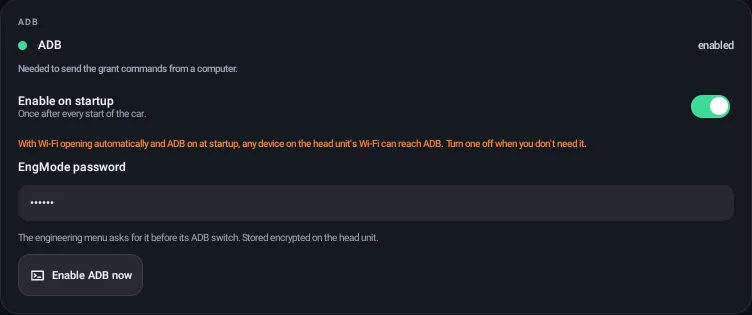

A glass drawer that floats over every app on the head unit: media, climate, battery mode, range, navigation and driver assist, readable at a glance and controllable with one finger.
Real screens from the app, running on an Android Automotive 11 emulator (car values are simulated).
No routeWith a route
Top bar
Info bar beside the clock
Media, battery and fuel with their ranges, regeneration and climate live in the car's own top bar. With a route, the next turn joins them and range folds into a ring. It steps aside while a full-screen app such as Android Auto hides that bar.
Full drawer
Every control, one swipe
Swipe down just below the top bar, even over a full-screen app, for large cards: media with transport and volume, navigation, driver assist with the stock gates, the climate seat, battery mode and regeneration, range and weather. Temperature and fan sliders run along the sides.
Settings
Make it yours
Pick the side and the height of the handle, choose between touch and swipe, turn the info bar on or off, and reorder or hide widgets separately for the half-open and open drawer. A Status panel shows the car link, media and notification access live.
Side bar
Half-open, at a glance
Touch the handle on the screen edge and a column of small tiles slides in: album art, the climate quadrant, battery mode and regen, range rings, next turn, driver assist and weather. Press and drag a tile to change it without opening anything.
Wi-Fi automation
Wi-Fi opens for wireless Android Auto and CarPlay
The car turns its Wi-Fi off on its own. Choose your phone and QuickSettings opens Wi-Fi while it's connected over Bluetooth: 10 s after startup, when the phone connects, or when Android Auto or CarPlay comes up, at most once a minute.

ADB automation
ADB on, without the menus
Save the engineering-menu password once (stored encrypted on the head unit) and the app switches USB debugging on for you, on demand or once at every start of the car. It warns you when Wi-Fi and ADB are both automatic.
Six widgets, two sizes
Touch the edge handle to open the drawer half-way: small tiles you read at a glance, with press-and-drag shortcuts. Open it fully for large cards and every control. English and Brazilian Portuguese.
Media
Apps on the head unit and the car's own sources: Bluetooth, USB, CarPlay, Android Auto. Drag for volume and tracks, voice search sent to the app that's playing.
Climate
A temperature × fan quadrant: drag the marker and it's set on release. Climate on/off, auto, zone sync and recirculation follow the car's state.
Car mode
Battery mode (Initial, Smart, Forced with a hold target) and regeneration Low, Medium, High, one tap each.
Autonomy
Battery and fuel rings, electric and fuel range in km and %, and the total.
Navigation
Next turn, street and ETA from your nav app; voice destination with no route; send the map to the instrument cluster and back.
Driver assist
Emergency braking, auto hold, lane departure prevention and collision warning, with the stock UI's own rules and a second tap to switch a safety function off.
How it works
QuickSettings talks to the car through the head unit's own services, the same ones the stock apps use, through the open-source jconfig-carbus library.
Nothing writes on its own
Every change to the car comes from your tap, slider release or drag release. Safety functions keep the stock gates.
Always there
The drawer runs as a foreground service from boot, and the notification listener brings it back if the system kills it.
Live values
The car has no change notifications for apps, so the drawer polls every 1.5 s while it's on screen, and right after each change.
Set up from your browser
The head unit has no settings page for drawing over apps or notification access, so those are granted over ADB. This page does it for you over a USB cable, with nothing to install on your computer.
Download the APKFrom the latest release, onto a USB stick.
Install it on the carWith a file manager on the head unit, then open QuickSettings once.
Turn on USB debuggingIn the car's engineering menu, then plug a data cable from this computer into the car.
Connect and grantBelow, in Chrome or Edge. Microphone (voice search) is granted in the app itself.
Head unit
Loading…
Questions
Which browsers work?
Chrome, Edge or another Chromium browser with WebUSB, on Windows, macOS, Linux or ChromeOS. Chrome on an Android phone works too, with a USB-OTG adapter. Firefox and Safari have no WebUSB.
The connection fails or the car isn't listed
Use a data cable, not a charge-only one. If you have the Android tools installed, another adb is probably holding the port: run adb kill-server and try again. On Windows the head unit may need the Google USB driver.
What does this page run on my car?
Only the commands shown under "Manual command" for each item, plus read-only checks (appops get, settings get, dumpsys package). It doesn't install anything, and nothing is sent anywhere but to the car over the cable.
Do I have to do this again?
No. The grants survive reboots and app updates. Uninstalling the app removes them.
I'd rather type the commands
Every command is in the README, and the app's settings screen shows each missing one.